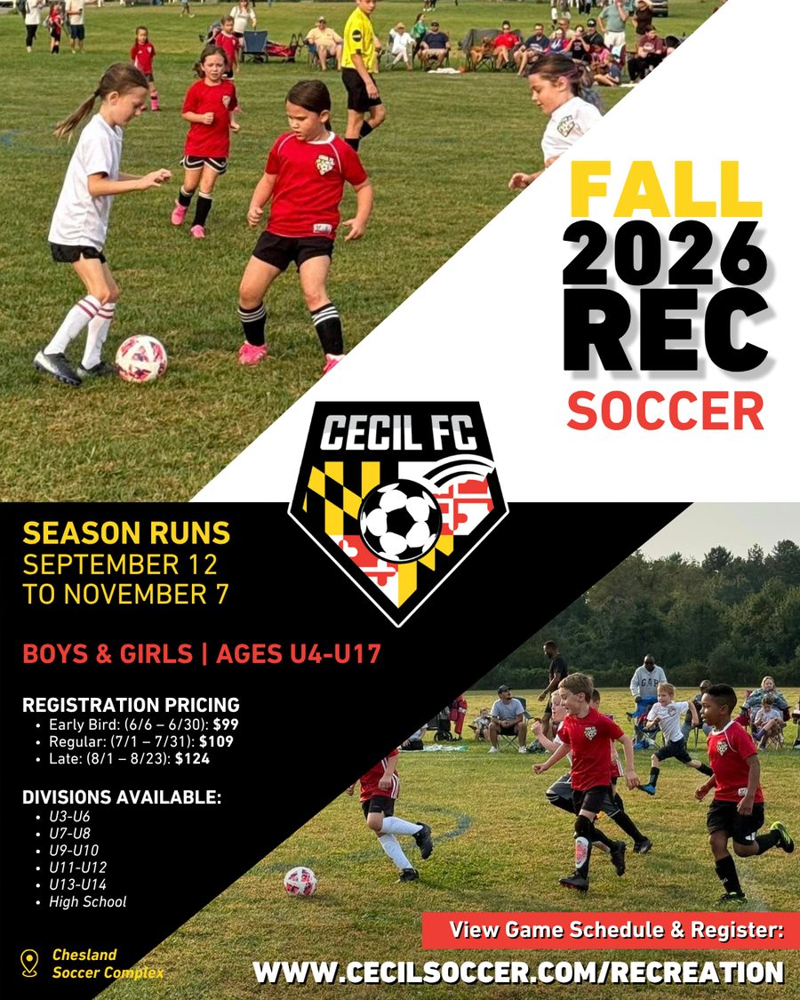
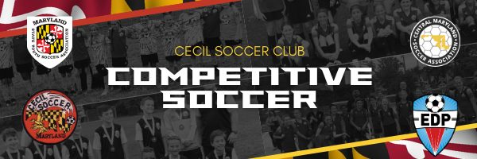
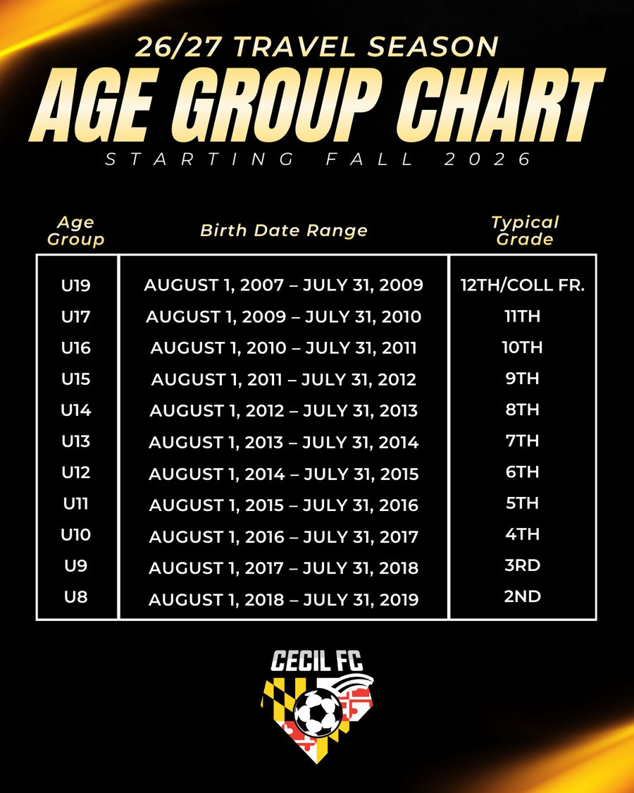
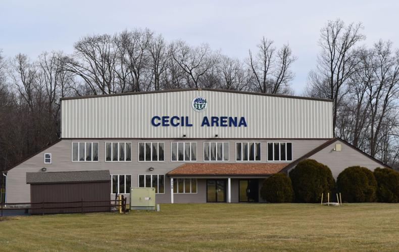
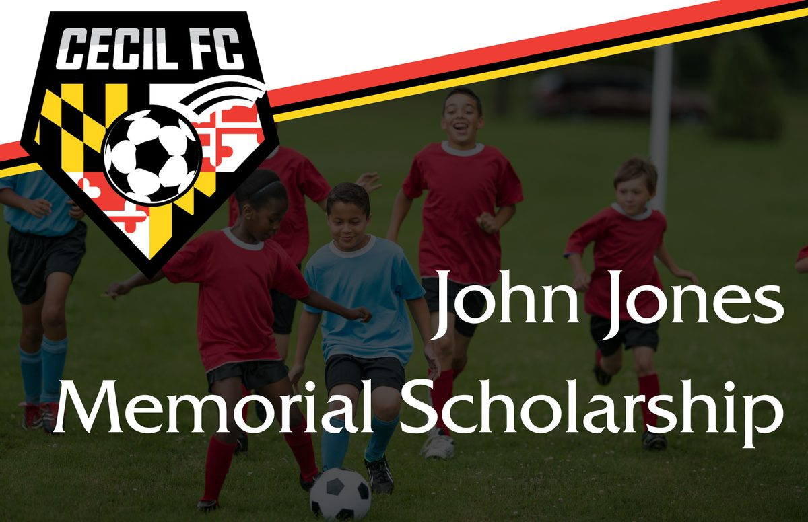

Recreational soccer
The Recreational Program is geared toward providing a fun, competitive, and safe soccer environment for kids. All kids are welcome, and the league strives to make it a positive experience for players and their families.
Winning is not the #1 goal, and there are no playoffs. Coaches and parents are encouraged to teach good sportsmanship, self-reliance, and teamwork. The emphasis is on participation and on improving skills, coordination, and strategy: fun first.
Seasons
- Fall: 8-game season at Chesland, September to early November. Fall 2026 runs September 12 – November 7.
- Spring: 8 games over 7 weeks at Chesland, April to May. Registration opens in early February.
Registration pricing
| Window | Price |
|---|---|
| Early bird | $99 |
| Regular | $109 |
| Late | $124 |
Divisions
U3/4, U5/6, U7/8, U9/10, U11/12, U13/14, and a High School division. U3–U6 play weekend games only; U7/8 and up have weekly practices.
Equipment
- Red/white Cecil Soccer recreational jersey (order through Soccer.com or on site at Chesland)
- Shin pads covered by soccer socks; black shorts recommended
- Soccer cleats or athletic shoes (no boots or sandals)
- No jewelry during games
Coaching a team
All coaches are volunteers and are often a parent of a player in the program. Consider it a rewarding opportunity to support the community and have fun. Head coaches receive a 100% reimbursement of their child’s registration (one child per coach), applied when the season ends.
Each coach must:
- Complete a TeamSnap coach registration form
- Complete a GotSport registration form (sent in the TeamSnap confirmation email)
- Complete coaching requirements in GotSport: background check, CDC concussion course, and SafeSport training
Coaching requirements are valid for one year and restart every July 1.

Competitive (travel) soccer

The Cecil FC competitive program fields travel teams starting at U9 and continuing through our high school program. Travel coaches are trained and hold licenses through US Youth Soccer.
Playing competitive soccer creates an environment that lets players compete at the highest levels of high school and potentially at the collegiate level.
Tryouts
We offer an affordable, fun, and competitive soccer environment where players can develop their skills and love for the game. Tryouts are held each spring at the Chesland Soccer Complex for the following season, with separate boys and girls sessions. Starting in fall 2026, Cecil FC follows the age group chart shown here.
Interested in coaching? Email info@cecilsoccer.org.

Winter indoor rec
A games-only indoor season at the Cecil Arena, 2706 North East Rd, North East, MD 21901. There are no practices during winter rec.
- Season
- January 2 – February 27, 2027
- Divisions
- U6 coed, then boys and girls divisions from U8 to U18
- Regular
- $90 (October 14 – November 30)
- Late
- $110 (December 1 – December 11)
Uniforms: U4/U6 players receive team t-shirts. U8 and older wear red and white Adidas jerseys ordered through Soccer.com; red/white reversible jerseys from prior seasons are allowed. Allow at least two weeks for delivery.


John Jones Memorial College Scholarship
John Jones was instrumental in the development and construction of the Chesland Soccer Complex and the Bard Cameron Sports Park. His faithful and selfless contributions to youth sports in Cecil County exemplify the meaning of volunteering and community service. John passed away in the summer of 2016.
Cecil Soccer awards two $1,500 scholarships in John’s name to graduating seniors who best exemplify the spirit of community service, academic excellence, and good sportsmanship. Applicants must plan to attend college after graduation.
Coaches and referees
All coaches are volunteers. The league supports coach education and licensing and encourages older players to become certified referees. See the Coach’s Corner and Referee Corner on cecilsoccer.org.